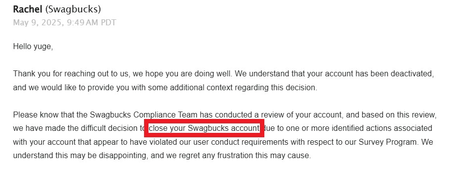
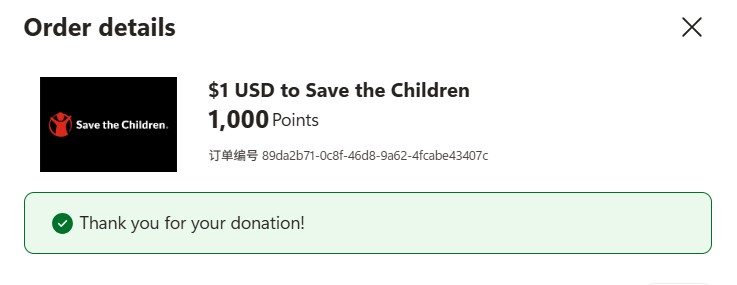
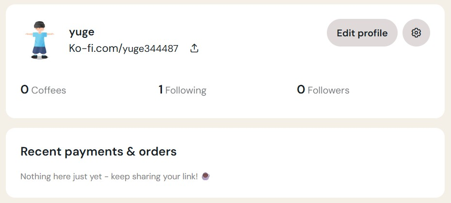

一次信任实验：每人捐 $1，我们能凑够 $100 吗？
这是一个安静的社会实验：在不主动推广的情况下，是否会有陌生人自愿支持我的 $100 美元 小目标？
我只筹集 正好 $100.00。任何超出部分将 100% 捐赠 给公益组织，并公开凭证。
为什么是 $100？
作为中国普通公民，我面临现实障碍：
- 中国实行严格的外汇管制，普通人难以合法持有或使用美元。
- 许多国际服务（如付费应用、工具）仅接受美元支付。
- 我曾通过 Swagbucks 完成有奖调查，辛苦积攒数月美元，却在提现前被永久封号（有邮件为证）。
因此，这 $100 不是乞讨，而是一次对网络善意的最小测试。
我是 GitHub 上的一名开发者，正在测试"陌生人之间的微小信任"是否成立。所有捐赠记录将公开在 README 中（未来可通过 GitHub 提交记录查看）。
证据展示
1. Swagbucks 账户被封证明：

账户因"可疑活动"被永久封禁，尽管我只是完成了正常的调查任务
2. 微软积分捐赠记录：

之前通过微软奖励计划向慈善机构捐赠的记录
3. 当前账号流水（Ko-fi）：

目前尚未收到任何捐款（实验刚开始）
规则与透明度
- ✅ 目标：严格收取 $100.00 USD。
- ✅ 超额部分将全部捐赠（我曾通过微软积分向公益组织捐款，有截图证明）。
- ✅ 捐赠已通过 Ko-fi 正式启用（链接见下方）。
- ✅ 每 72 小时 截图 Ko-fi / PayPal 流水并更新于此页。
- ✅ 达到 $100 后，捐赠链接将立即移除。
❤️ 捐赠 $1 支持这个信任实验
这不是募捐，不是求助，而是一面镜子：
"一个素未谋面的中国人，承诺只拿 $100 —— 你愿意相信吗？"
The $100 Trust Experiment: Can Strangers Help Me Access Global Digital Services?
This is a social experiment in digital trust: Can strangers from around the world help me access basic global digital services that require USD?
I'm raising exactly $100.00 USD. Any amount beyond this will be 100% donated to charity, with public proof provided.
Goal: $100
Raised: $0 / $100
Why $100? The Story Behind This Experiment
As a developer from China, I face real barriers in today's interconnected digital world:
- Foreign exchange restrictions: Chinese citizens cannot freely hold or use USD due to strict government controls.
- Digital exclusion: Many essential global services (developer tools, educational platforms, productivity apps) only accept USD payments.
- Broken trust: I spent months completing surveys on Swagbucks to earn just $5, only to have my account permanently banned right before cashout (see evidence below).
This $100 isn't about money—it's about testing whether genuine human connection can transcend borders and systems.
I'm a GitHub developer testing if "micro-trust between strangers" can exist in our increasingly fragmented digital world. All donations will be publicly documented via GitHub commit history.
Transparency & Evidence
1. Swagbucks Account Termination:
My account was permanently banned for "suspicious activity" despite only completing legitimate survey tasks
2. Previous Charity Donation:
Proof of my previous charitable giving through Microsoft Rewards program
3. Current Payment Status:
No donations received yet (experiment just launched)
My Commitment to You
- ✅ Strict $100 limit: I will keep exactly $100.00 USD—no more, no less.
- ✅ 100% transparency: All Ko-fi/PayPal transactions will be screenshot and updated every 72 hours.
- ✅ Charity guarantee: Any excess funds will be donated to verified charities with public proof.
- ✅ Immediate closure: The donation link will be removed the moment we reach $100.
- ✅ Global accessibility: Your $1 helps me access the same digital tools you take for granted.
❤️ Donate $1 to Bridge the Digital Divide
This isn't fundraising—it's a test of human connection:
"A stranger from across the world needs just $1 to participate in the global digital economy. Will you help?"